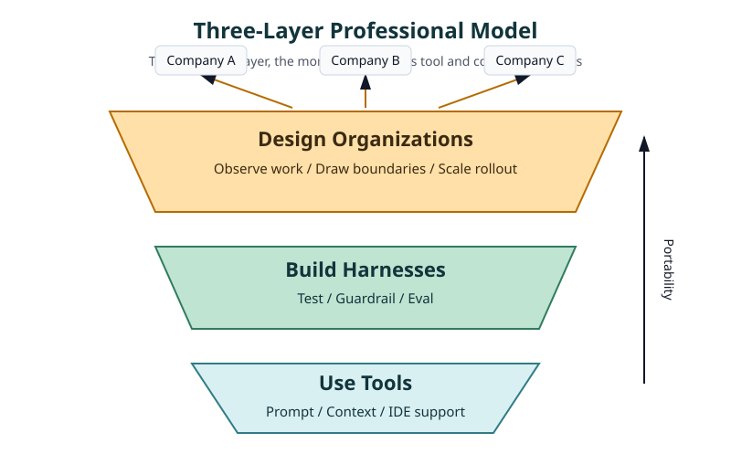
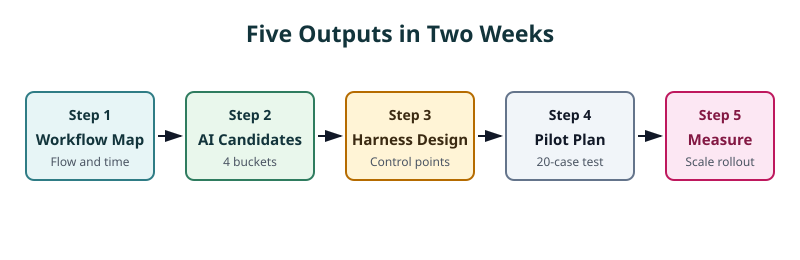
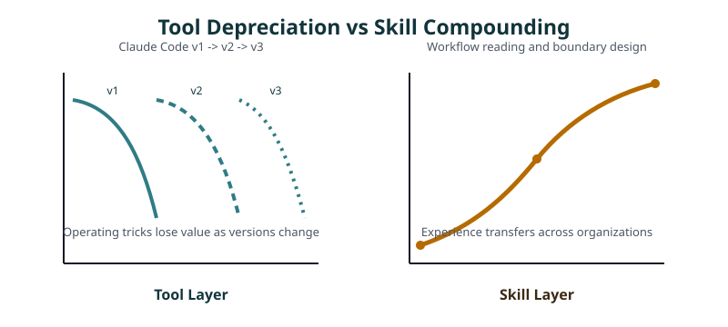

People Who Can Use AI Are Already Abundant: The Next Need Is People Who Can Design Workplaces Where AI Can Work¶
For / Key Points
For: Engineers and tech leads who have started using AI coding tools and are asking what to develop next.
Key Points: - "I can use AI" is already becoming a commodity in 2026. Prompting alone is not a durable differentiator. - The durable skill is the ability to design AI adoption across company culture, constraints, and existing workflows. - A practical target is producing a current workflow map, AI replacement candidates, a harness design, and a pilot plan within two weeks.
The question is simple: which layer of skill should engineers build so their value survives tool churn?
"I Can Use AI" Is Becoming Abundant¶
"I can use Claude Code and Copilot" is already resume table stakes. In Stack Overflow's 2025 survey, 84% of respondents said they use or plan to use AI tools in the development process, and 51% of professional developers use them daily.1
"Abundant" does not mean the entire hiring market has no shortage of engineers. It means that, in AI coding contexts, basic tool operation alone is no longer a strong differentiator.
AI experience is no longer rare.
Job posts ask for generative AI experience, Copilot usage, and the ability to instruct AI agents. Many applicants have already used chat to refine specs, IDE completions to write code, and Claude Code to generate tests. The question is no longer whether someone has used the tools.
So what creates the difference?
The difference is not the ability to assign work to AI. It is the ability to design a work environment where AI can run repeatedly without breaking the production system. In enterprise adoption, permissions, audits, approvals, and evaluation often become the bottleneck before prompting skill does.
The Three-Layer Model: Use, Harness, Design¶
AI-era skills become clearer when they are split into three layers: use, harness, and design.

Layer 1 is the person who can use tools. They write prompts, provide context, and delegate small implementation tasks to Copilot, Claude Code, or Codex. GitHub explains that Copilot cloud agent becomes more effective when it knows the repository, tools, and coding standards.2
The limit of this layer is the short half-life of usage skills. Claude Code keeps absorbing multi-file implementation, Git workflows, MCP, Skills, Hooks, and multiple agents.3 Today's operating trick can become tomorrow's default feature.
Layer 2 is the person who can build a harness. Harness engineering means surrounding AI output with tests, guardrails, approval flows, and evaluation metrics so it can run repeatedly. A typical flow is input, preprocessing, Skills, Tools, Guardrail, Checkpoint, output, and Eval.
This layer creates real separation. If AI review can run 100 times and stop at the same control points with the same pass/fail criteria, the team moves to a different level of reliability. But it is still mostly an engineering function.
Layer 2 means building a control system that makes AI safe inside an already defined workflow boundary. It is powerful, but the boundary itself is taken as given.
Layer 3 is the person who can design an organization where AI can work. They read nontechnical variables such as culture, approval flow, legacy systems, security boundaries, and human relationships. Then they place AI where it can actually survive.
Layer 3 means observing and redesigning the workflow boundary itself. It decides what AI should own, what humans should retain, and what should remain untouched for now.
The same inquiry-classification workflow produces different outputs. A Layer 2 person builds the classification prompt, test data, stop conditions, and review screen. A Layer 3 person decides which inquiries go to AI, which remain human-owned, and which approval path the pilot must pass.
Observe the work → map the flow → identify AI-ready steps → design guardrails → run a small pilot → show the numbers → expand.
If that video plays in someone's head, they are not just a tool user. They are designing a production system.
| Layer | What the person can do | Market value |
|---|---|---|
| Layer 1: Use tools | Prompt, pass context, and use AI tools in daily work | Commoditizes quickly |
| Layer 2: Build harnesses | Design tests, guardrails, approval flows, and evaluation metrics inside existing workflows | Differentiates engineers |
| Layer 3: Design organizations | Redesign workflow boundaries and scale rollout under company-specific constraints | Durable portable skill |
Layer 1 is the entrance, Layer 2 is the execution base, and Layer 3 is the connection to business outcomes. A career ceiling rises only when the work moves upward.
What to Produce in Two Weeks¶
A Layer 3 professional does not start with a grand strategy. They produce initial outputs that make a pilot safe to try.

The practical target is to produce an AI adoption blueprint within two weeks of entering a new department. This is not a grand transformation plan. It is a thin, concrete set of five outputs that makes the pilot feel safe enough to try.
The two-week output is not the finished system. It is the initial diagnosis and pilot design after checking access rights, SME availability, workflow logs, and existing KPIs.
Current workflow map
List who looks at what, in which tool, and for how long. Include meetings and approvers.
Example: "A sales planning member compares Salesforce with a spreadsheet and spends 45 minutes transferring weekly report data."AI replacement candidate list
Separate work into four groups: direct AI automation, AI assistance, human-owned, and not now.
Example: "First-pass summaries can be automated, final customer wording stays human, and legal judgment is untouched for now."Harness design
Put input, preprocessing, Skills, Tools, Guardrail, Checkpoint, output, and Eval on one page.
Example: "Contract summaries pass through redaction, prohibited-term checks, and 20-item expert scoring."Pilot plan
Start with one workflow, one expert, and 20 cases. Do not begin with a department-wide rollout.
Example: "Only inquiry classification is tested, and one veteran compares 20 historical cases against known labels."Measurement and rollout proposal
Use time reduction, rework rate, and error rate. Impressions do not pass governance.
Example: "Expand to the adjacent team if average handling time falls from 18 minutes to 9 and misclassification stays within 5%."
Once these five outputs exist, the conversation changes. It moves from "Should we use AI?" to "Under what conditions can we test it safely?" That shift matters most in large organizations.
Why Portability Matters¶
Tools change. Last year's Copilot and this year's Copilot are not the same product, and Claude Code now spans terminal, IDE, web, Slack, and GitHub Actions workflows.4 Merely keeping up with tools creates a constant relearning race.
The higher process remains. Observe the workflow, draw the human/AI boundary, run a small pilot, and show the effect. It survives transfers, new companies, and new business domains. Tool mastery is a depreciating asset; workflow design skill is a compounding asset.

Conway argued that system design mirrors an organization's communication structure.5 AI adoption follows the same pressure. If inputs, approvers, and failure stops are not designed first, AI work fragments into local optimizations across departments.
The reverse Conway maneuver uses the desired architecture to shape team and boundary design.6 The name matters less than the work. Drawing boundaries and writing specifications becomes the practical skill that lets AI land inside an organization.
Large organizations are not ideal laboratories. Nobody wants to carry risk. IT protects control, legal dislikes exceptions, and business units will not spend time on trials without numbers.
That is why small, safe, measurable pilots work. One workflow, one person, and 20 cases contain the downside. If the pilot succeeds, the next approval meeting needs measured evidence, not enthusiasm.
Summary¶
This does not mean ignoring how Claude Code works. Layer 1 is necessary. A person who cannot operate the tools cannot build Layer 2 harnesses or Layer 3 organizational designs.
But tool operation is a floor, not a ceiling. The next skill is the ability to control AI through reliable systems and land those systems inside real culture, constraints, and approval flows.
The faster AI evolves, the more a career shifts from "what do you know?" to "what can you change without breaking the system?" The asset that does not depreciate is the ability to read workflow structure and make sound decisions inside organizational constraints.